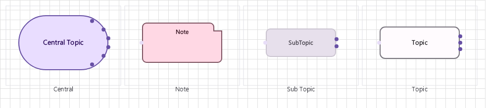

MindMap Diagram Family
Mind map diagrams with 4 node types for radial idea visualization from a central topic outward.

Overview
Base Control: MindMapControl : MaterialControl
Namespace: Beep.Skia.MindMap
The MindMapControl is the root control for this diagram family. It inherits MaterialControl and provides shared port management, styling, and template methods for all nodes in the family.
This family contains 4 node types.
Node Types
| Node Class | Shape | Description |
|---|---|---|
CentralNode | Circle/oval (large) | Central idea/node. Root of the mind map. |
TopicNode | Rounded rectangle | First-level topic branching from central node. |
SubTopicNode | Rounded rectangle (smaller) | Second-level subtopic. Supports unlimited nesting. |
NoteNode | Callout/sticky note | Annotation or detail note attached to any node. |
CentralNode
Central idea/node. Root of the mind map.
| Shape | Circle/oval (large) |
|---|---|
| Input Ports | 0 |
| Output Ports | 8 (radial) |
TopicNode
First-level topic branching from central node.
| Shape | Rounded rectangle |
|---|---|
| Input Ports | 1 (center-facing) |
| Output Ports | 4 (radial) |
SubTopicNode
Second-level subtopic. Supports unlimited nesting.
| Shape | Rounded rectangle (smaller) |
|---|---|
| Input Ports | 1 |
| Output Ports | 4 |
NoteNode
Annotation or detail note attached to any node.
| Shape | Callout/sticky note |
|---|---|
| Input Ports | 1 |
| Output Ports | 0 |
Connection Points
Every node in this family exposes connection points (ports) for linking to other nodes. Port positions are computed lazily by LayoutPorts(), which runs when MarkPortsDirty() flags the layout as stale after a move or resize.
| Node Class | Input Ports | Output Ports | Extra |
|---|---|---|---|
CentralNode | 0 | 8 (radial) | — |
TopicNode | 1 (center-facing) | 4 (radial) | — |
SubTopicNode | 1 | 4 | — |
NoteNode | 1 | 0 | — |
Connection Conventions
When building diagrams with this family, follow these conventions:
- Central node always at origin (0,0 relative to control)
- Topics radiate outward from center
- Lines use curved routing for organic feel
- Colors typically change per depth level
Usage Example
Complete example showing creation, node placement, and connection:
C# Example
var mm = new MindMapControl
{
X = 50, Y = 50,
Width = 600, Height = 400
};
drawingManager.AddComponent(mm);
var central = new CentralNode
{
X = 300, Y = 200,
Title = "Product Strategy"
};
var topic = new TopicNode
{
X = 200, Y = 100,
Title = "Marketing"
};
var subtopic = new SubTopicNode
{
X = 100, Y = 50,
Title = "Social Media"
};
drawingManager.AddComponent(central);
drawingManager.AddComponent(topic);
drawingManager.AddComponent(subtopic);
drawingManager.ConnectComponents(central, topic);
drawingManager.ConnectComponents(topic, subtopic);Collapse and Expand
MindMapVisibility.Apply(components, lines) recomputes visibility from each node's IsCollapsed flag: descendants of a collapsed node and their connecting lines are hidden, everything else is restored. It returns how many components and lines changed, which hosts use to request a redraw only when needed:
var root = drawingManager.GetComponents().OfType<CentralNode>().First();
root.IsCollapsed = true;
int changed = MindMapVisibility.Apply(
drawingManager.GetComponents().ToList(),
drawingManager.GetLines());
if (changed > 0)
drawingManager.RequestRedraw();